2024
- 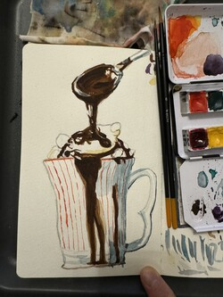 Hot chocolate painting Mar 20, 2024
- 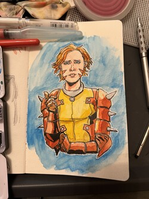 Rachel Summers Mar 5, 2024
- 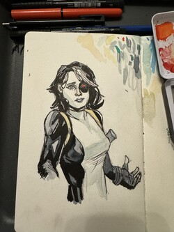 Domino Mar 2, 2024
2023
- 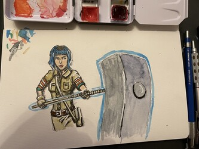 Ramona Flowers Nov 26, 2023
- 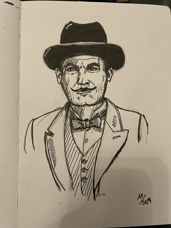 Hercule Poirot Nov 4, 2023
- 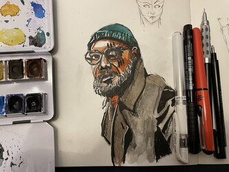 Nick Fury from the Secret Invasion TV show Sep 25, 2023
2022
- 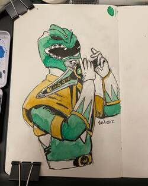 Green Ranger Nov 20, 2022
- 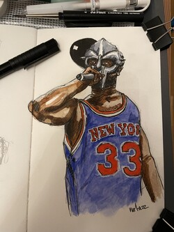 MF DOOM Nov 18, 2022
- 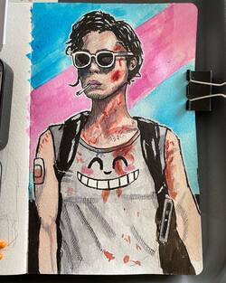 Kate Sep 10, 2022
- 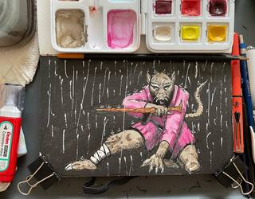 Splinter Sep 7, 2022
- 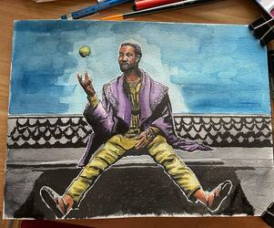 The One Who Remains Aug 28, 2022
- 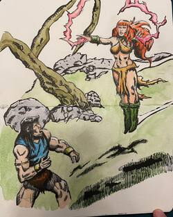 Conan and Tetra Aug 19, 2022
- 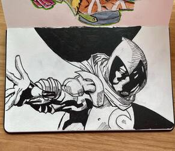 Moon Knight Mar 31, 2022
- 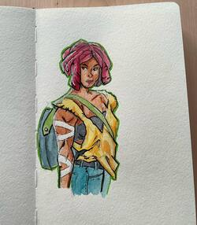 Cherry Mar 18, 2022
2021
- 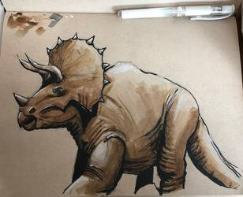 Dinosaur Mar 12, 2021
- 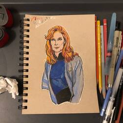 Dr. Beverly Crusher Feb 22, 2021
2020
- 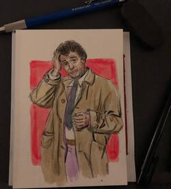 Columbo Dec 28, 2020
- 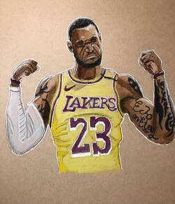 Lebron James Oct 18, 2020
- 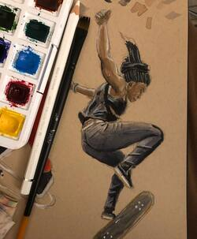 Adrianne Sloboh Sep 28, 2020
- 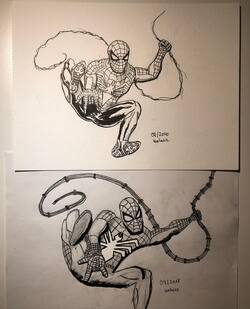 Spider-Man 2018 vs. 2020 Sep 3, 2020